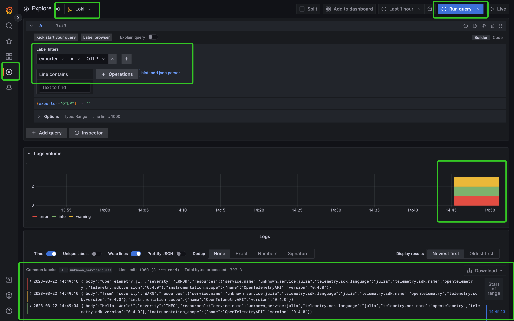

Send Logs to Loki via OpenTelemetry Collector
Two loggers are provided by OpenTelemetry.jl, OtelSimpleLogger and OtelBatchLogger. If you're familiar with the concepts in LoggingExtras.jl, those two loggers can be treat like sinks. In previous examples, we've learned how to print logs in the console.
using OpenTelemetry
using Term # optional, for better display
using Logging
global_logger(OtelSimpleLogger());
@info "Hello, World!"
@warn "from"
@error "OpenTelemetry.jl!"To send logs to OpenTelemetry Collector, we can specify the exporter explicitly when initializing the OtelSimpleLogger.
global_logger(OtelSimpleLogger(exporter=OtlpHttpLogsExporter()))The next step is to setup OpenTelemetry Collector, Loki and Grafana web portal to view the collected logs.
cd docs/src/tutorials/Send_Logs_to_Loki_via_OpenTelemetry_Collector
docker compose upAgain, let's log some messages in Julia:
@info "Hello, World!"
@warn "from"
@error "OpenTelemetry.jl!"Now open Grafana (http://localhost:3000/) in your browser. You shold find the logs we just recorded as depicted below:

Similar to BatchSpanProcessor, in practice, we usually send logs in batches instead of sending them immediately one-by-one.